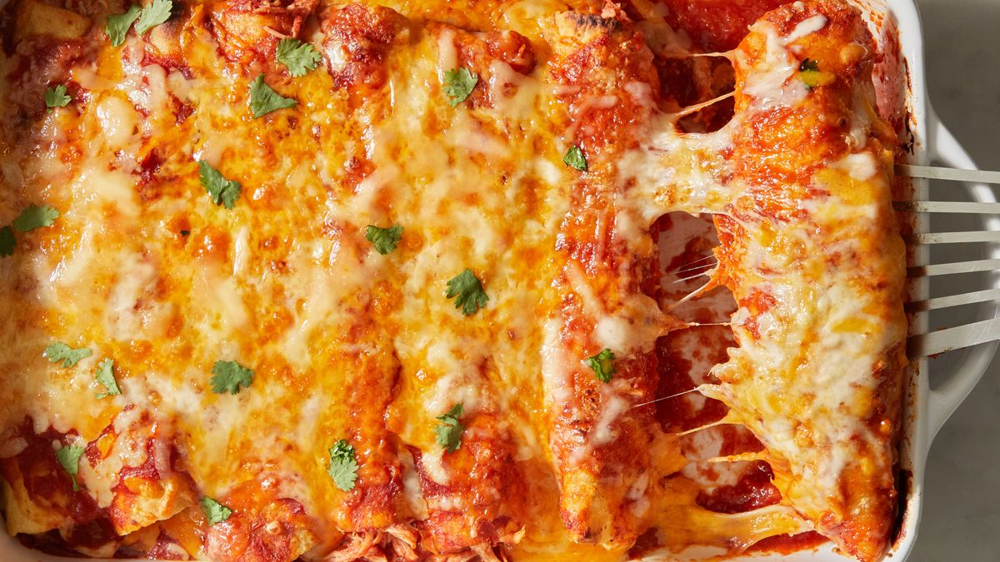

Chicken Enchiladas

Chicken Enchiladas
Chicken enchiladas are a delicious and popular Mexican dish that consists of tortillas rolled around a flavorful filling of cooked chicken, typically seasoned with spices like cumin and chili powder.
The rolled tortillas are then placed in a baking dish, covered with a rich and savory enchilada sauce made from ingredients like tomatoes, chili peppers, and spices.
This sauce adds a tangy and slightly spicy kick to the dish.
After being smothered in the sauce, the enchiladas are topped with a generous amount of cheese, often shredded cheddar or Monterey Jack, and then baked until the cheese is melted and bubbly, and the enchiladas are heated through.
Garnishes such as fresh cilantro, diced onions, sour cream, and sliced jalapeños can be added for extra flavor and texture.
Chicken enchiladas are a crowd-pleasing comfort food known for their satisfying combination of tender chicken, spicy sauce, melted cheese, and a touch of freshness from the garnishes.
They are commonly served as a main course in Mexican and Tex-Mex cuisine and can be customized with various ingredients to suit individual tastes.
Ingredients
- Cooked chicken (shredded or diced)
- Tortillas (corn or flour)
- Enchilada sauce (red)
- Shredded cheese (typically cheddar or Monterey Jack)
- Optional garnishes (e.g., cilantro, onions, sour cream)
Steps
- Prepare the Filling: Cook and shred or dice the chicken. Sauté it with onions, garlic, cumin, chili powder, salt, and pepper until it's well seasoned and heated through. Add any optional ingredients like beans or vegetables.
- Warm the Tortillas: Briefly heat the tortillas in a dry skillet or microwave to make them pliable, so they're easier to roll.
- Assemble the Enchiladas: Spoon a portion of the chicken filling onto each tortilla, roll them up tightly, and place them seam-side down in a baking dish.
- Add Sauce and Cheese: Pour the enchilada sauce over the rolled tortillas, making sure they are well covered. Sprinkle shredded cheese on top.
- Bake and Serve: Bake the enchiladas in a preheated oven until the cheese is melted and bubbly, typically at 350°F (175°C) for about 20-25 minutes. Garnish with optional toppings like cilantro, onions, sour cream, and serve hot.